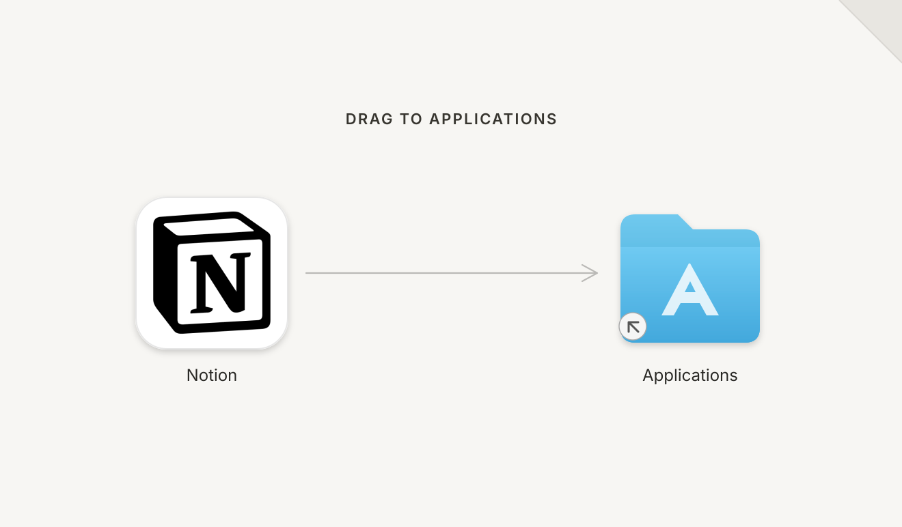
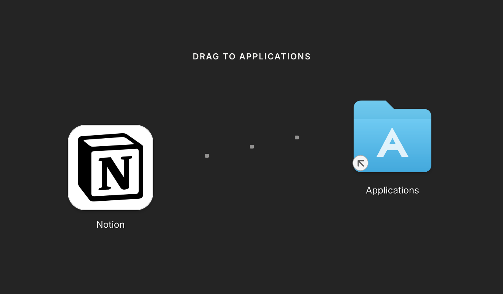
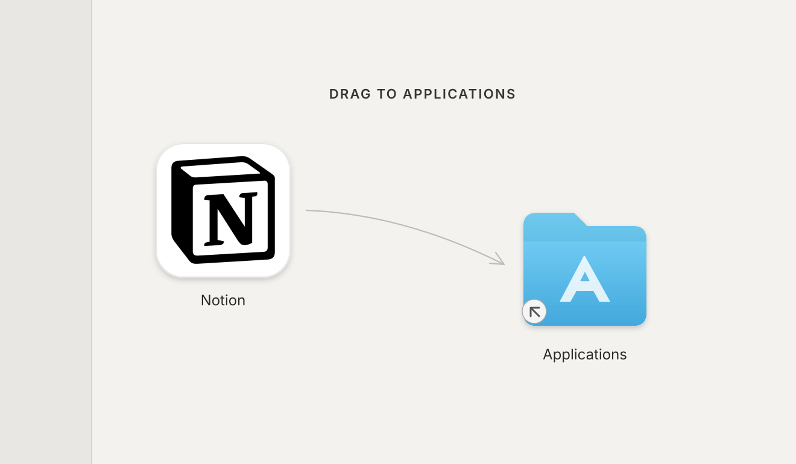

1. Quiet Page
Notion’s paper-like workspace becomes a calm, direct installation surface.

Notion’s paper-like workspace becomes a calm, direct installation surface.

A rising sequence of blocks turns Notion’s modular structure into the drag path.

A single sidebar cue creates an asymmetric route through Notion’s familiar workspace structure.